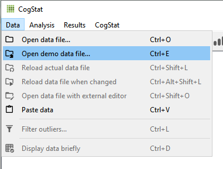
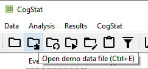
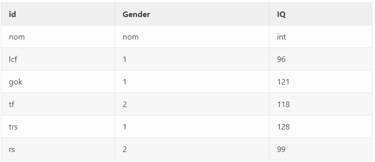

Software
0.2 Data
Data files used for the labs are all taken from open data sources. Links are provided for each lab. For convenience, all of the data files are also available here as single files in the github repository for this lab manual
0.2.2 CSV format
All of the data files in .csv format are also available to download as a .zip file
0.2.3 SPSS format
All of the data files in SPSS format are also available to download as a .zip file
0.3 R

In this course we will be using R as a tool to analyze data, and as a tool to help us gain a better understanding of what our analyses are doing. Throughout each lab we will show you how to use R to solve specific problems, and then you will use the examples to solve homework and lab assignments. R is a very deep programming language, and in many ways we will only be skimming the surface of what R can do. Along the way, there will be many pointers to more advanced techniques that interested students can follow to become experts in using R for data-analysis, and computer programming in general.
R is primarily a computer programming language for statistical analysis. It is free, and open-source (many people contribute to developing it), and runs on most operating systems. It is a powerful language that can be used for all sorts of mathematical operations, data-processing, analysis, and graphical display of data. I even used R to write this lab manual. And, I use R all the time for my own research, because it makes data-analyis fast, efficient, transparent, reproducible, and exciting.
0.3.1 Why R?
There are lots of different options for using computers to analyze data, why use R?. The options all have pros and cons, and can be used in different ways to solve a range of different problems. Some software allows you to load in data, and then analyze the data by clicking different options in a menu. This can sometimes be fast and convenient. For example, once the data is loaded, all you have to do is click a couple buttons to analyse the data! However, many aspects of data-analysis are not so easy. For example, particular analyses often require that the data be formatted in a particular way so that the program can analyze it properly. Often times when a researcher wants to ask a new question of an existing data set, they have to spend time re-formatting the data. If the data is large, then reformatting by hand is very slow, and can lead to errors. Another option, is to use a scripting language to instruct the computer how reformat the data. This is very fast and efficient. R provides the ability to everything all in one place. You can load in data, reformat it any way you like, then anlayze it anyway you like, and create beautiful graphs and tables (publication quality) to display your findings. Once you get the hang of R, it becomes very fast and efficient.
0.3.2 Installing R and R Studio
Download and install R onto your computer. The R website is: http://www.r-project.org
Find the download R using the link. This will take you to a page with many different mirror links. You can click any of these links to download a version of R that will work on your computer. After you have installed R you can continue.
After you have installed R on your computer, you should want to install another program called R studio. This program provides a user-friendly interface for using R. You must already have installed R before you perform this step. The R-studio website is: http://www.rstudio.com
Find the download link on the front-page, and then download R studio desktop version for your computer. After you have installed R studio you will be ready to start using R.
The website R-fiddle allows you to run R scripts in the cloud, so you can practice R from your web-browser!
0.3.3 R studio notes and tips
Figure 0.1: The R-studio workspace
0.3.3.1 Console
When you open up R studio you will see three or four main windows (the placement of each are configurable). In the above example, the bottom left window is the command line (terminal or console) for R. This is used to directly enter commands into R. Once you have entered a command here, press enter to execute the command. The console is useful for entering single lines of code and running them. Oftentimes this occurs when you are learning how to correctly execute a line of code in R. Your first few attempts may be incorrect resulting in errors, but trying out different variations on your code in the command line can help you produce the correct code. Pressing the up arrow while in the console will scroll through the most recently executed lines of code.
0.3.3.2 Script Editor
The top left corner contains the script editor. This is a simple text editor for writing and saving R scripts with many lines. Several tabs can be opened at once, with each tab representing a different R script. R scripts can be saved from the editor (resulting in a .r file). Whole scripts can be run by copy and pasting them into the console and pressing enter. Alternatively, you can highlight portions of the script that you want to run (in the script editor) and press command-enter to automatically run that portion in the console (or press the button for running the current line/section: green arrow pointing right).
0.3.3.3 Workspace and History
The top right panel contains two tabs, one for the workspace and another for history. The workspace lists out all of the variables and functions that are currently loaded in R’s memory. You can inspect each of the variables by clicking on them. This is generally only useful for variables that do not contain large amounts of information. The history tab provides a record of the recent commands executed in the console.
0.3.3.4 File, Plot, Packages, Help
The bottom-right window has four tabs for files, plots, packages, and help. The files tab allows browsing of the computers file directory. An important concept in R is the current working directory. This is file folder that R points to by default. Many functions in R will save things directly to this direct, or attempt to read files from this directory. The current working directory can be changed by navigating to the desired folder in the file menu, and then clicking on the more option to set that folder to the current working directory. This is especially important when reading in data to R. The current working directory should be set to the folder containing the data to be inputted into R. The plots tab will show recent plots and figures made in R. The packages tab lists the current R libraries loaded into memory, and provides the ability to download and enable new R packages. The help menu is an invaluable tool. Here, you can search for individual R commands to see examples of how they are used. Sometimes the help files for individual commands are opaque and difficult to understand, so it is necessary to do a Google search to find better examples of using these commands.
0.3.4 How to complete the R Labs
Each of the labs focuses on particular data-analysis problems, from graphing data, computing descriptive statistics, to running inferential tests in R. All of the labs come in three parts, a training part, a generalization part, and a writing part. The training part includes step-by-step examples of R code that solves particular problems. The R code is always highlighted in grey. The generalization part gives short assignments to change parts of the provided code to solve a new problem. The writing part tasks you with answering questions about statitiscal concepts.
The way to complete each lab is to open a new R Markdown document in R-studio, and then document your progression through each of the parts. By doing this, you will become familiar with how R and R-studio works, and how to create documents that preserve both the code and your notes all in one place. There are a few tricks to getting started that are outline below.
- Open R-studio
0.3.4.1 R projects
- Create a new R project
- Go to the file menu and select new project, or go to the top right-hand corner of R-studio, you should see a blue cube with an R in it, then select New project from the dropdown menu
- Save the new R project somewhere that you can find it. If you are working on a lab computer, then save the new R project to the desktop.
What is an R project? When you create a new R project you are creating two things, 1) a new folder on your computer, and 2) a “.Rproj” file. For example, if you gave your R project the name “Lab1”, then you will have created a folder title “Lab1”, and inside the folder you will find an R project file called “Lab1.Rproj”.
As you work inside R-studio you will be creating text documents, and you will be doing things like loading data, and saving the results of your analyses. As your work grows and becomes more complex, you can often find yourself creating many different files. The R project folder is a very useful way of organizing your files all in one place so you can find them later. If you double-clik an R project file, R-studio will automatically load and restore your last session. In the labs, you will be using your R project folder to:
- save data files into this folder
- save R-markdown files that you will use to write your R-code and lab notes
- save the results of your analysis
0.3.4.2 Installing libraries
When you install R and R-studio, you get what is called Base R. Base R contains many libraries that allow you to conduct statistical anlayses. Because R is free and open-source, many other developers have created add-on libraries that extend the functionality of R. We use some of these libraries, and you need to install them before you can do the labs.
For example, in any of the labs, whenever you see a line code that uses the word library like this library(libraryname), this line of code telling R to load up that library so it can be used. The libraryname would be replaced with the actual name of the library. For example, you will see code like this in the labs:
library(data.table)This line of code is saying that the data.table library needs to be loaded. You can check to see if any library is already loaded by clicking on the “packages” tab in the bottom right hand panel. You will see many packages listed in alphabetical order. Packages that are currently loaded and available have a checkmark. If you scroll down and find that you do not have data.table installed, then you need to install it. To install any package follow these steps:
- Click on the packages tab
- Find the “install” button in the top left hand corner of the packages tab.
- Click the install button
- Make sure “install from:” is set to CRAN repository
- Make sure “dependencies” is clicked on (with a checkmark)
- type the name of the library into the search bar.
- As you type, you should see the names of different packages you can install pop-up in a drop-down menu. You must be connected to the internet to install packages from CRAN
- Once you find the package (e.g.,
data.table), click it, or just make sure the full, correctly spelled name, is in the search bar - Press the install button
You should see some text appear in the console while R installs the package.
- After you have installed the package, you should now see that it is listed in the packages tab.
- You can turn the package on by clicking it in the package tab.
- OR, you can turn the packge on by running the command
library(data.table)in the console, to do this typelibrary(data.table)into the console, and press enter.
0.3.4.3 Quick install
If you are using R on one of the lab computers, you may find that some of the packages are not installed. The lab computers get wiped everynight, so it may be necessary to install packages each time you come back to the lab. Fortunately, we can tell R to install all of the packages we need in one go. Copy the following lines of code into the console, and press enter. Note you can select all of the lines at once, then copy them, then paste all of them into the console, and press enter to run them all. After each of the packages are installed, you will then be able to load them using library().
install.packages(ggplot2)
install.packages(dplyr)
install.packages(data.table)
install.packages(summarytools)
install.packages(gapminder)
install.packages(ggpubr)0.3.4.4 R markdown
Once you have the necessary packages installed you can begin creating R markdown documents for each lab. We admit that at the beginning, R markdown documents might seem a little bit confusing, but you will find they are extremely useful and flexible. Basically, what R markdown allows you to do is combine two kinds of writing, 1) writing R code to conduct analyses, and 2) writing normal text, with headers, sub-headers, and paragraphs. You can think of this like a lab journal, that contains both your writing about what you are doing (e.g., notes to self), and the code that you use for analysis. Additionally, when your code does something like make a graph, or run a statistical test, you can ask R markdown to print the results.
The R markdown website has an excellent tutorial that is well worth your time to check out: https://rmarkdown.rstudio.com/lesson-1.html
0.3.4.5 R markdown lab templates
We have created a set of template documents for each lab that can be downloaded here: download lab templates.
When you unzip the file you should find the following:
- A new folder titled “RMarkdownsLab”
- Inside the folder you will see the “RMarkdownsLab.Rproj” file
- A data folder containing data files for the labs
- A “LabTemplates” folder containing the R markdown templates for each lab.
To get started with Lab 1, follow these steps:
- copy the template file for lab 1, “Lab 01 Graphing_Student Name.Rmd”, and place it into the “RMarkdownsLab” (copy it out of the template folder, and into the RMarkdownsLab folder).
- Rename the file to add your own name, eg., “Lab1GraphingMattCrump.Rmd”
- double-click the “RMarkdownsLab.Rproj” file
- R-studio will now load up.
- If you click the files tab, you will see all of the files and folders inside the “RMarkdownsLab” folder
- Click on your lab1 .rmd file, it will now load into the editor window.
Each lab template .rmd file contains three main sections, one for each part of the lab. You will write things inside each section to complete the lab.
0.3.6 R-studio Cloud
R-studio is also in the cloud. This means that if you want to use R and R-studio through your web-browser you can do that without even installing R or R-studio on your computer. It’s also free!
sign up for an R-studio cloud account here: https://rstudio.cloud
You can make new R projects, work inside them, and everything is saved in the cloud!
To see how everything would work, follow the steps in this video. You will need to download this .zip file to your computer to get started
The link to the video is https://www.youtube.com/watch?v=WsbnV0t7FE4, or you can watch it here:
0.7 CogStat
(using CogStat 2.5rc)
0.7.1 Software
0.7.1.1 Introduction
The purpose of this manual is to provide an easy and student-friendly guide for those who would like to learn the basics of statistics using CogStat. This manual is a supplement to Matthew J. C. Crump’s book “Answering Questions With Data - Introductory Statistics For Psychology Students” and an adaptation of his “Statistics Lab Manual” (Answering questions with data: Lab Manual). Through eleven chapters, we will ask questions about data and answer them after running the corresponding analysis. Hopefully, after reading this manual and completing the exercises, you will gain a common understanding of how CogStat can help you with your work. On the other hand, it is important to note that this manual does not have any aspirations for extensive detailing in statistics or CogStat. We will show and explain different matters in CogStat that are useful in practice and real-life but will not reflect on all the underlying theoretical arguments.
0.7.1.2 Automatic Data Analysis
In automatic data analysis, users do not have to choose individually which analysis to run; instead, they have to choose a question that they would like to answer. It is a powerful method for researchers and students, which is employed partially by many software, but CogStat relies on this method fully, when analyzing data. It helps to reduce human error, which could happen during the analysis or at the interpretation of the results. It is also a partial solution for the replication crisis. The replication crisis refers to the general issue where scientific results are often impossible to replicate. The replicability of research settings and outcomes is a requirement in science that cannot be simply missed. During the early years of the replication crisis, the existence of many previously described phenomena has been questioned due to this problem. Automatic data analysis can help with some of the issues mentioned above. (for more, see: https://en.wikipedia.org/wiki/Replication_crisis#Background)
Many advantages in line with automatic data analysis can help to moderate the replication crisis and its negative effects. With automatic data analysis, users do not have to choose between loads of settings to run their test correctly. This spares a lot of time and leaves fewer opportunities for mistakes. There is also no need to test assumptions by the user manually since the program does it automatically and chooses the optimal test accordingly. This function is highly favourable, as it relies less on subjectivity; thus, two separate tests-results by two individuals will be identical. With this, the replicability of results could increase. There are some methods where the results highly depend on the chosen analysis because of the absence of consensus in many statistical procedures. This also affects the replicability negatively and might result in incorrect or misleading interpretations. Additionally, note that there are some cases when more analysis methods could be correct for an exact task, this might also cause some difficulty, as well as increase the subjectivity. Automatic data analysis employs a consensual pipeline based on the methodology literature, this reduces the freedom and subjectivity of the researcher and generates greater consensus. It is highly beneficial since mistakes stemming from, for example, lack of statistical knowledge or incorrect knowledge, performance errors, and P-hacking can be eliminated or at least decreased.
0.7.1.3 CogStat
CogStat is a statistical software that works with automatic data analysis and has an output designed to show the results in a dense, easily interpretable, and informative way (Krajcsi, 2021). CogStat employs the most common tests used in cognitive science research and makes them automated. This means that users cannot choose a single hypothesis test to run; instead, a more general question can be chosen, such as comparing groups. When running the analysis automatically in CogStat, we must provide the data with the appropriate measurement levels for the variables. Setting the right measurement levels is especially important in this method since the software relies heavily on the variable levels when choosing the right analysis to run. Measurement levels must be set before loading the data into CogStat since the software is not designed for editing data. Spreadsheets or statistical software can be used to set the required measurement levels. We also choose what variables we want to run the analysis on, depending on the relations and questions we would like to explore. After that, the software automatically checks the assumptions, runs the corresponding test, and provides an informative output with the data graphed and the most important descriptives and frequency traits without the user’s any other interference. This helps to understand the data and statistics more without the need to spend a lot of time untangling the technical details. The previously described optimised output is one of CogStat’s most important features. It shows the results in easy-to-understand divisions and also reports them in the current APA style. This makes reporting results faster and more precise, as it can be simply copied and pasted. The output is also well-structured as it is divided into three main parts (Raw data, Sample Properties, and Population Properties) in most cases.
0.7.1.4 How to start with CogStat
0.7.1.4.1 Downloading and installing the software
The software is free to download from the official CogStat webpage (https://www.cogstat.org/) and runs on Windows, Mac, and Linux. (For more and help at the download and installation: https://doc.cogstat.org/Installation)
0.7.1.4.2 Data
There are many datasets used in this manual, and the majority of it is real data from the original manual by Matthew J. C. Crump (https://github.com/CrumpLab/statistics/tree/master/data), while others are generated with spreadsheet software. All the datasets that will be used in this manual are available in the CogSat package in the form of demo files. (Data used in this manual can be found in the folder “Haasz. Answering questions with data Lab Manual”.) These types of datasets can be loaded from there, in the following ways shown in the pictures below.

or

After choosing the option “Data” and “Open demo data file” you can reach any demo data from the CogStat package. With “Open data file”, you can use any other dataset you have downloaded that is in the right format that CogStat can handle. You can also load data from different programs with the copy-paste function, using the clipboard. Simply select and copy the data you would like to use and paste it into the CogStat window. It can be especially important when you do not want to use the whole dataset for the analysis, so only some parts will be copied and pasted. Also, to open a file, you can drag and drop it into the CogStat window, too.
0.7.1.4.3 Setting the measurement levels
CogStat cannot be used for editing your data, meaning you have to use a spreadsheet or another statistical software to store and edit it. (It is another reason why the copy-and-paste function is helpful.) Before loading your data into CogStat, it is advised to check it and set all the measurement levels for all variables. Many file format is supported (e.g., Excel spreadsheet, OpenDocument spreadsheet, Text files, SPSS, Japs, Jamovi files, and others… ) (for more: https://doc.cogstat.org/Handling-data) (If you use the demo datafiles that belong to this manual, you will see that we set the measurement levels for you.)
There are two methods to set measurement levels in the dataset. If the data is stored in a spreadsheet format (e.g. Microsoft Excel, Google Spreadsheet, etc.), a second row should be added, including int, ord, and nom for the interval, ordinal, and nominal measurement levels (second row, after the variable names). Note that ratio variables are also handled as intervals, and string variables will be set to nominal automatically.

Another way to set the measurement level is to use other statistical software, where you can adjust them, and after saving the data, you can open it with CogStat. For example, in SPSS, you can set the measurement levels and then open the file into the CogStat window. However, be aware that the measurement levels cannot be set in every statistical software, so in this case, information about measurement levels will be missing when importing your data from such a source (e.g. R files or STATA files). If measurement levels for the dataset are not set before loading it into CogStat, CogStat will set it to unknown (unk) and, in most cases, will handle it as interval variables. Analysis can be run like this, but if it is not your intention to have your data handled as interval variables, then set the right measurement levels. For more on handling data: https://doc.cogstat.org/Handling-data.
If you need additional information or would like to learn more about CogStat, there are many sources:
A brief description of how to start using the software (https://doc.cogstat.org/Quick-Start-Tutorial)
The user documentation of the software (https://doc.cogstat.org/)
Advantages of using CogStat (https://docs.google.com/presentation/d/1dIb6f3yPvr8stMLS7b7qcBsgloqbcQj2b55NUT4D9vc/edit#slide=id.p)
Using CogStat for your analysis (https://docs.google.com/presentation/d/1_rnHhyD3pF9BZuqCkcFLWKhAbX1DfS8T5q-TxogqpZA/edit#slide=id.p)